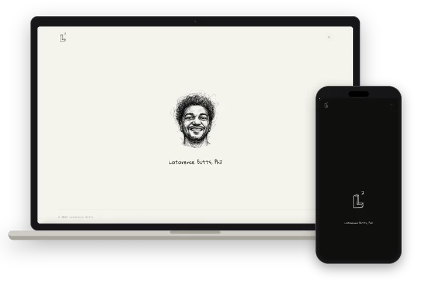

About
Latarence is the personal site of Latarence Butts, PhD. It is a single page that carries his name, a hand-drawn mark and a link to his LinkedIn profile.
In light mode the page shows a pen portrait on paper; in dark mode it swaps in the L² mark drawn in chalk on ink. The name is set in handwriting above a small monospace footer.
Butts Studios designed the identity and the website.
Details
- What we made
- Identity · Personal site
- Palette
-
- #F5F3EE
- #EDE8DF
- #1A1916
- #C8B87A
- Type
- Gloria Hallelujah for the name; Geist Mono for details; Spectral for reading.
- Live
- latarence.com ↗
- Captured
- October 2026
Gallery
6 images. Tap any one to see it full size.


From the original studio site
A short screen recording from the first Butts Studios site.